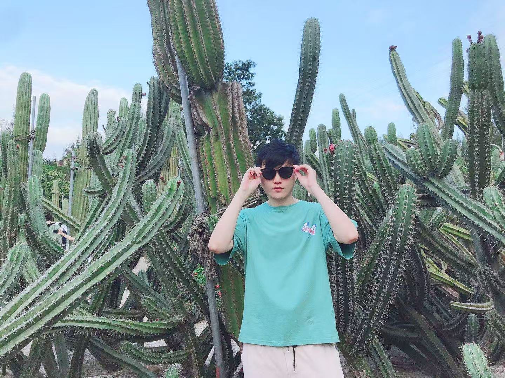
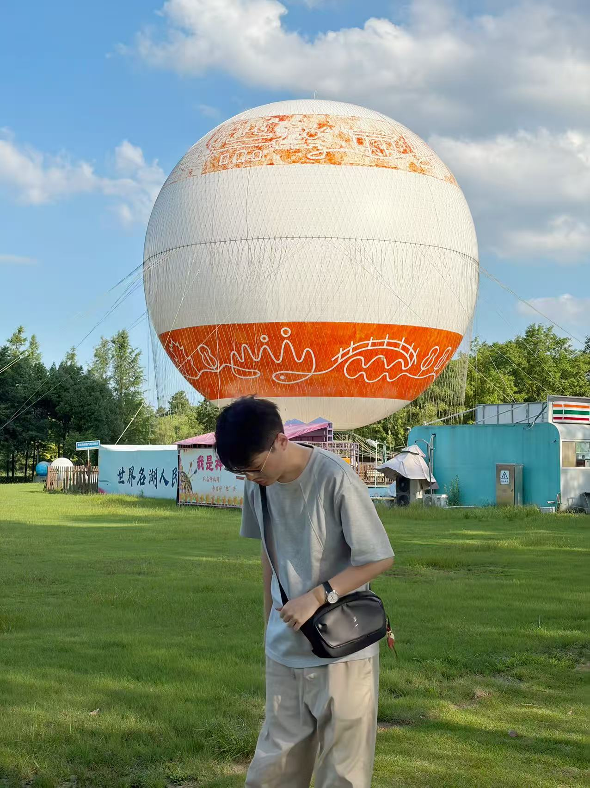

DESIGN
INTERACTION UI DESIGNER

HERO IMAGE 01
HERO IMAGE 02Experience Selected Projects
-
- 独立负责公司数据分析产品 3 个核心模块的端到端交互设计，主导多轮体验优化迭代；通过用户路径梳理与竞品分析重新定义核心任务流，关键操作路径优化，任务完成率提高了 35%。
- 从 0 到 1 沉淀数据产品线设计规范与组件库，降低开发还原成本、缩短设计交付周期约 30%。
- 作为设计侧横向支撑多条业务线（钉钉客户端、HR 工作平台等），独立承接 3 个跨团队项目，与 PM / 研发协作推进落地，获业务方好评。
-
- 全链路负责国内技服业务的体验设计，对接技服业务线的 BA（产品）；优化交互文档、输出 UI，跟进开发并协同验收，输出验收文档等。
- 支持国内其它业务线的体验设计工作，覆盖 DMP 国内营销、PC 门户、B2B 商城等业务，统一交互规范并保障多线并行交付。
-
- 负责公司核心 SaaS 产品「医疗理赔审核系统」的体验设计，重新梳理复杂理赔业务逻辑与审核流程，结合业务目标对核心模块进行重构设计；关键审核链路操作步骤优化，审核人均处理效率提升 30% 左右。
- 从 0 到 1 主导新型业务「小额快赔小程序」的 UI 与交互设计，深入理赔业务场景梳理用户旅程与核心流程，保障设计落地，支撑业务快速上线验证。
- 制定并沉淀产品级设计规范，推动设计组件库落地，统一多产品交互与视觉语言，降低设计与开发协作成本。
-
- 负责设计部门的日常工作管理协调与主设计执行，培养设计氛围，制定设计规范，提升团队整体设计水平。
- 与各产品经理密切接触，多产品线并行推进，涵盖产品需求分析、交互模式研究、UI 视觉输出与设计走查。
- 收集用户反馈及数据，根据实际数据调整页面结构与视觉层级，驱动产品的完善与成长。
-
- 从 0 到 1 负责 C 端产品「车乐通」App 的 UI 设计，与产品经理深入交流业务、实地调研业务场景，结合具体业务流程完成交互及视觉设计，并组织培训运营人员设备操作流程等相关事项。
Portfolio
点击卡片进入项目详情
周立俏
10+ 年 UI / 交互设计经验，主导多款 B/C 端系统、小程序与 App 的从 0 到 1 全链路设计及重构迭代。覆盖 AI 大数据分析、商业医疗保险、燃气水务、技术服务等多元行业；
具备 2–3 年团队管理经验，擅长设计规范沉淀与跨团队协作。
熟练运用 AI 工作流提效，将 AI Coding 等智能化能力贯穿设计到落地的全流程。
个人信息
- 职业
- 体验设计师（UX/UI）
- 方向
- 交互设计/视觉设计/设计管理
- 状态
- 离职中-随时到岗
联系我
- 邮箱
- 912744642@qq.com
- 微信
- zhouliqiao1992